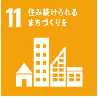
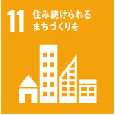
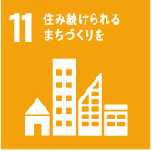

ホーム・事業紹介
会社案内
SDGs
採用情報
お問い合わせ
申し訳ございません、このウェブサイトは
インタネットエクスプローラーに対応していません。
他のブラウザでウェブサイトをアクセスしてください。
持続可能な開発目標(SDGｓ)の取り組み
当社の取り組み目標は１７のゴールの内、８つのゴールです。
これらのゴールに向け取り組んでいます。

SDGs チャレンジのゲーム
2021年９月22日、京都大学経営管理大学院の客員准教授である村井曉子先生と研究員の桺本頌大様をお招きし、講義やゲームを通して、ＳＤＧsへの取り組みの大切さを全社員に説いて頂きました。「ＳＤＧs？それって一体何？」「とりあえず儲かればそれでよいのでは？」といった認識の殻を打ち破り、楽しみながら「経済」「環境」「社会」のバランスの必要性などを学ぶことができ、あっという間の３時間でした。
※2030SDGｓゲームは社団法人イマココラボが開発し、村井先生、桺本様は、同公認ファシリテーターです。
京都大学経営管理大学院グローバル社会起業寄附講座のホームページに掲載されました。
https://www.gse.gsm.kyoto-u.ac.jp/index.php/2021/09/28/20210922/
 
